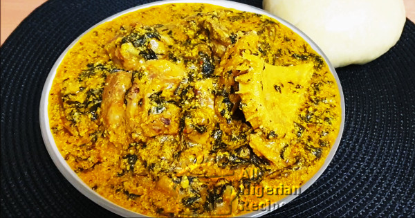

Egusi Soup

Description
Popular Nigerian Eba and Egusi Soup
This is the original Igbotic Egusi Soup served to good in-laws when they come to marry a special daughter.
Ingredients
- 1½ cups ground egusi
- 2 tablespoons dry ground achi
- Bitter leaf
- Beef
- Shaki
- Stockfish
- 2- 3 cooking spoons red palm oil
- 1 teaspoon Ogiri Igbo
- 2 seasoning cubes
- 2 tablespoons ground crayfish
- Habanero / Scotch bonnet pepper
- Salt
Steps
-
Boil the meats and stockfish with the seasoning cubes till almost done.
-
Add pepper, crayfish, ogiri Igbo, ground egusi, bitter leaves and palm oil
-
Cover and cook for about 7 minutes
-
Mix the ground achi with water till a medium consistency is achieved
-
Cover and continue cooking till the soup thickens and has an overall yellow colour. This shouold take 5 to 7 minutes.
-
Add salt to your taste and stir very well. Its done!